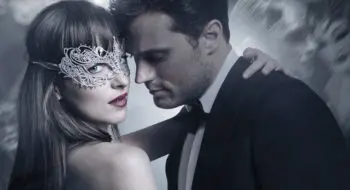
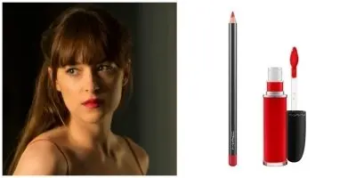
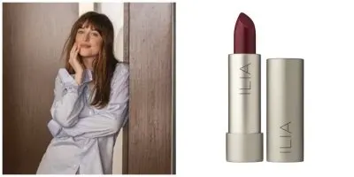
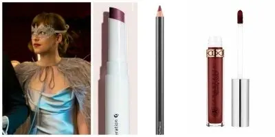

I rossetti di Anastasia Steele in 50 sfumature di nero

Ieri sera sono stata al cinema, come avrete potuto capire dal titolo, sono andata a vedere il film che tutta Italia attendeva ovvero "50 sfumature di nero".
A parte il mio giudizio rigurado al film che non è di questo che mi va parlare oggi, ciò che ho osservato tsnto, durante tutto il film è stato il rossetto della protagonista. Dakota Johnson, alias Anastasia Steele.
Ho notato, in giro per il web, che non sono stata l'unica a guardare le labbra di Anastasia Steele.
Ho iniziato tutto il tempo a pensare se era una tinta labbra o un rossetto lunga tenuta.
Ovviamente sappiamo che di scena in scena il make-up viene ritoccato continuamente per essere sempre perfetti; ma ciò che notavo era che anche durante i baci il colore e la stesura non si smontava nemmeno di un ciccino. .il che, a noi amanti del make-up, ha ipnotizzato.
Non potevo dunque non fare una ricerca e ho scoperto prima di tutto che non è sempre lo stesso rossetto.
Innanzitutto ho visto con piacere che la make-up artist del sequel del romanzo di E. L. James, Evelyne Noraz, ha voluto condividere con tutte su Instagram il makeup utilizzato per questo film.
Nella scena dove indossa il vestito rosso con i capelli mezzi raccolti, (per intenderci, durante la serata del compleanno di Christian Grey), il rossetto è stato giustamente abbinato al bellissimo colore rosso vivo del vestito e parliamo di un Mac.
Le labbra prima vengono disegnate con una matita ciliegia (Cherry lip liner) e poi riempiendo con un lucido mat (Retro matte lipstick Feel So Grand).

Quando Anastasia Steele invece, indossa solo la camicia di Christian Grey dopo le loro notti bollenti; c'era bisogno di un look molto soft e che richiamasse l'incarnato della protagonista e di conseguenza non doveva essere un rosso acceso.
La Make-up artist è riuscita a trovare il rossetto giusto.
Questa volta si tratta di ILIA lipstick Arabian Knights, "il migliore, delicato e vivace allo stesso tempo" spiega Evelyne Noraze.

Nella scena del ballo in maschera tutta vestita di argento, la scena diventata simbolo di 50 sfumature di nero: qui le nuances di rossetto sono vinaccio, nuovamente grazie a una matita MAC (la Burgundy, Borgogna, dal nome del vino) e il lucido Glossier Generation G Jam.

C'è un però, nelle scene dei baci mozzafiato a tenere il rossetto impresso sulle labbra allora interviene l'Heathers Liquis Lipstick di un marchio che, guarda un po', si chiama Anastasia.